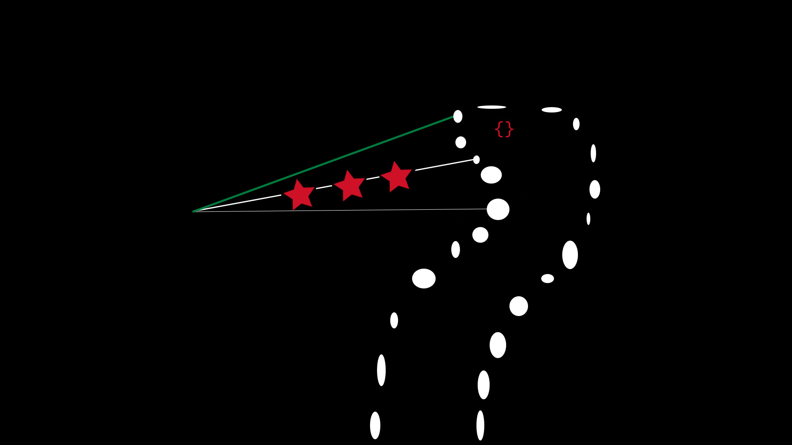

-> whoami
I'm tjkr0wn, an iOS security researcher. I do things like reverse engineering some of Apple's proprietary boot-chain code or exploiting security vulnerabilities.
My current focus is on Apple devices (both hardware and software), but I'm open to expanding my attack surface
to other ecosystems.
-> What got you started in security research?
I saw all this buzz about "oob_timestamp". Before I knew it, I was messing with iOS hacking in my free time.
-> Where can I find some of your research?
I've got quite a few cool bugs and projects that I haven't revealed yet, but I hope to soon enough.
My public projects and exploits are most likely going to be on my GitHub. I also like to show others my cool findings in the "Hack Different" communnity.
-> What do you reverse the most?
I'm spending lots of time hand-reversing or sifting through a kernelcache, iBoot, secureROM, or SEPROM assembly.
-> Can I contact you?
Discord: tjkr0wn #3611 (I'm idle in the "Hack Different" Discord server most of the time)
PGP: https://keybase.io/tjkr0wn/pgp_keys.asc
Twitter: @tjkr0wn
Timezone: EST
-> pre-comms
bug.txt: 7256683a6ff0271c35802ae9b859c8dfbd04c9716d1e23afce12322064acf604, undisclosed, https://twitter.com/tjkr0wn/status/1422008877655097347
murajaa.txt: e450d566996ac55b87a106caab5b6e8b1204d371d8ebc79d0ae70985f5e6ad93, undisclosed, https://twitter.com/tjkr0wn/status/1455377798688817161
REDACTED.txt: 1fefc7d087c0c95c55b98902527d0445ab8e91ee15aa5a157b8710d57fdab48902f327bd482c52d39561cddb7c214db1, undisclosed, https://twitter.com/tjkr0wn/status/1577730413832810496
PUBLIC RESEARCH:
iBoot: A New Era
Part 1: Capabilities and Objects, Link: https://gid.supply/new_era_writeup/PART1
-tjkr0wn
-KASSAR SAGN